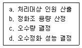
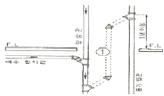
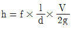
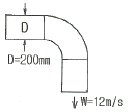
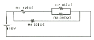

건축설비기사 (2007-09-02 기출문제)
1과목: 건축일반
1. 기초 부동침하를 방지하는데 효과적인 방법이 아닌 것은?
- 기초 상호간을 강성있게 연결한다.
- 가급적 건물의 중량을 무겁게 한다.
- 구조 전체의 하중을 기초에 균등히 분포시킨다.
- 지하실을 강성체로 설치한다.
(정답률: 100%)

2. 철근콘크리트 1방향 슬래브의 두께는 최소 얼마 이상으로 하여야 하는가?
- 100mm
- 120mm
- 150mm
- 200mm
(정답률: 알수없음)
3. 목조계단 구조에 관한 설명 중 틀린 것은?
- 계단의 디딤널의 양옆에서 지지하는 경사진 재를 계단옆판이라 한다.
- 계단멍에는 계단나비 3m 이상일 때 챌판 중간부를 받치기 위하여 설치한 것으로 보통 1.5m 간격으로 배치한다.
- 디딤판의 두께는 보통 3~4cm의 널판을 사용한다.
- 챌판은 상하 디딤널에 홈파끼우고, 양마구리는 옆판에 홈파넣기 또는 통넣기로 한다.
(정답률: 46%)
4. 상점의 적당한 방위에 대한 설명 중 잘못된 것은?
- 음식점 - 도로의 남측
- 양복점 - 직사광선이 들지 않는 위치
- 식료품점 - 서향
- 서점 - 도로의 남측이나 서측
(정답률: 59%)
5. 다음 중 커머셜 호텔(commercial hotel)계획에서 크게 고려하지 않아도 되는 것은?
- 주차장
- 발코니
- 레스토랑
- 연회장
(정답률: 100%)
6. 건축 음향에 대한 설명 중 잘못된 것은?
- 명료도는 소음이 증가하면 저하한다.
- 명료도는 잔향시간이 증가하면 증대한다.
- 음의 세기에 의한 명료도는 음압레벨이 70~80dB에서 가장 좋다.
- 폰(phon)척도는 귀의 감각적 변화를 고려한 주관적인 척도이다.
(정답률: 47%)
7. 다음 중 음에 관한 설명으로 옳은 것은?
- 발음체의 진동수와 같은 음파를 받게 되면 자기도 진동하여 음을 내는 현상을 잔향이라 한다.
- 잔향시간은 실흡음력이 클수록 길어지고, 실용적이 클수록 짧아진다.
- 60폰의 음을 70폰으로 높이면 10폰의 증가에 의해 사람은 음의 크기가 대략 2배 커진 것으로 지각한다.
- 외부공간에서 음의 전달은 온도, 습도, 바람 등의 외부 기후조건과 무관하다.
(정답률: 65%)
8. 다음 학교운영방식에 관한 설명 중 U + V형과 V형의 중간이 되는 E형에 해당하는 것은?
- 교실의 수는 학급수와 일치하며, 각 학급은 스스로의 교실 안에서 모든 교과를 행한다.
- 혼란이 없도록 소유물처리와 동선을 충분히 고려한다.
- 학급, 학생 구분을 없애고 학생들은 각자의 능력에 맞게 교과를 선택한다.
- 모든 교실이 특정 교과 때문에 만들어지며 일반교실은 없다.
(정답률: 50%)
9. 다음 중 사무소 건축에서 코어플랜(core plan)의 이점과 가장 관계가 먼 것은?
- 부지를 경제적으로 사용할 수 있으며, 사무실의 독립성이 보장된다.
- 코어의 외곽이 내진벽 역할을 할 수 있다.
- 사무소의 임대면적 비율(rentable ratio)을 높일 수 있다.
- 각 층에서 설비계통의 거리가 비교적 균등하게 되므로 최대부하를 줄일 수 있고 순환도 용이하게 된다.
(정답률: 70%)
10. 다음의 척도조정(modular coordination)에 대한 설명 중 옳지 않은 것은?
- 척도조정이라 함은 모듈을 사용하여 건축 전반에 사용되는 재료를 규격화 하는 것을 말한다.
- 척도조정을 적용할 경우 설계 작업이 단순화되고, 간편해진다.
- 국제적으로 같은 척도조정을 사용하여도 건축 구성재의 국제 교역은 불가능하다.
- 척도조정의 단점은 거물의 배치 및 외관이 단순해지는 경향이다.
(정답률: 80%)
11. 다음 중 기초의 분류 상 직접기초에 속하지 않는 것은?
- 복합기초
- 독립기초
- 온통기초
- 말뚝기초
(정답률: 60%)
12. 실내에 있는 사람이 느끼는 온열감각에 영향을 미치는 물리적 열 환경 요소를 조합한 것으로 가장 옳은 것은?
- 열관류율, 열전도, 대류열, 복사열
- 온도, 습도, 기류, 복사열
- 온도, 습도, 기류, 대류열
- 열관류율, 열전도, 기류, 복사열
(정답률: 90%)
13. 다음 중 고층 건물 외벽의 석재 붙이기 공법으로 가장 적당한 것은?
- 박판 공법
- 일채식 공법
- 습식 공법
- 선부착 PC 공법
(정답률: 알수없음)
14. 목재의 적합에서 두 재가 직각 또는 경사로 물려 짜이는 것 또는 그 자리를 나타내는 용어는?
- 이음
- 맞춤
- 쪽매
- 장척
(정답률: 알수없음)
15. 단열에 관한 설명 중 옳지 않은 것은?
- 일반적으로 열전도율이 작은 재료를 사용하는 것이 단열효과가 좋다
- 공기층은 기밀성이 떨러져도 단열효과에는 영향이 없다.
- 단열재에 수분이 침투하면 단열성이 매우 나빠진다.
- 10cm 공기층을 1개층 설치하는 것보다 5cm 공기층을 2개층 설치하는 것이 단열에 유리하다.
(정답률: 알수없음)
16. 철골구조에 관한 설명 중 틀린 것은?
- 스팬이 클 때는 판보(plate girder)보다는 트러스 보를 사용하는 것이 좋다.
- 하이브리드거더(hybrid girder)는 성질의 재질을 혼성하여 만든 일종의 조립보이다.
- 하나의 접합부에서 볼트와 리벳을 병용할 때에는 리벳이 전응력을 부담한다.
- 판보(plate girder)에서 스티프너(stiffener)는 플랜지판의 휨모멘트에 대한 보강을 위해 사용된다.
(정답률: 29%)
17. 모임지붕 ㆍ 합각지붕 등의 측면에서 동자기둥을 세우기 위하여 처마도리와 지붕보에 걸쳐 댄 보를 무엇이라 하는가?
- 추녀
- 우미량
- 마루대
- 종보
(정답률: 알수없음)
18. 사무소건축의 기준층 층고 결정시 검토사항과 가장 관계가 먼 것은?
- 사무실의 깊이와 사용목적
- 채광조건
- 엘리베이터의 승차거리
- 공기조화 및 공사비
(정답률: 72%)
19. 도서관이 출납시스템 중 열람자는 직접 서가에 면하여 책의 체제나 표지 정도는 볼 수 있으나 내용을 보려면 관원에게 요구하여 대출기록을 남긴 후 열람하는 형식은?
- 자유개가식
- 안전개가식
- 반개가식
- 폐가식
(정답률: 53%)
20. 단위주택의 집합형식에 대한 설명 중 옳은 것은?
- 중정형은 다양하고 풍부한 외부공간을 구성할 수 없다.
- 클러스터형은 좌향이나 프라이버시 확보에 불리할 수 있다.
- 테라스형은 전망 및 채광이 불리해지고 외부 공간 확보가 어렵다.
- 타워형은 균등한 조건으로 배치가 가능하지만 조망은 불리하게 된다.
(정답률: 10%)
2과목: 위생설비
21. 지방분 등이 배수관 등에 유입되는 것을 막기 위하여 사용되는 포집기는?
- 그리이스 포집기
- 샌드 포집기
- 플라스터 포집기
- 가솔린 포집기
(정답률: 60%)
22. 감지기 주위의 온도가 일정한 농도의 연기를 포함하게 되면 작동하는 감지기는?
- 정온식 감지기
- 보상식 감지기
- 차동식 감지기
- 광전식 감지기
(정답률: 91%)
23. 양수펌프의 크기 결정에 있어서 실양정(actual head)을 바르게 나타낸 것은?
- 흡입 실양정 + 토출 실양정
- 흡입 실양정 + 압력수두
- 흡입 실양정 + 속도수두
- 토출 실양정 + 토출관 내 전손실수두
(정답률: 67%)
24. 오수정화조의 설계 순서를 바르게 표시한 것은?

- a → b → c → d
- a → d → c → b
- a → c → d → b
- c → d → a → b
(정답률: 42%)
25. 1000ℓ/h의 급탕을 전기온수기를 사용하여 공급할 때 시간당 전력사용량(kW/h)은? (단, 급탕온도 70℃, 급수온도는 10℃, 전기온수기의 전열효율은 95%로 한다.)
- 63
- 66
- 70
- 73
(정답률: 알수없음)
26. 연결송수관 설비에 관한 설명 중 옳지 않은 것은?
- 송수구의 위치는 소방펌프 장동차가 용이하게 접근할 수 있는 곳으로 한다.
- 방수구의 설치 높이는 바닥면에서 0.5m 이상 1m 이하로 한다.
- 방수구연결구의 구경은 50mm로 한다.
- 연결송수관 전체를 사이어미즈 커넥션 또는 소방대 전용전이라고 한다.
(정답률: 알수없음)
27. 액화 천연가스(LNG)에 대한 설명 중 옳지 않은 것은?
- 주요성분은 프로판(C3H8), 부탄(C4H10)이다.
- 발열량이 높고 무공해성이다.
- 자연발화나 착화온도가 높기 때문에 안전성이 높다.
- 비중이 상온에서 공기보다 가벼워 바닥에 누설가스가 체류하진 않는다.
(정답률: 70%)
28. 내경이 150〔mm〕인 배관에 0.06〔m3/sec〕의 물이 직선관로를 흐를 때, 배관길이가 100〔m〕일 경우 관내의 마찰손실수도는? (단, 마찰손실계수 f = 0.03)
- 1.18〔m〕
- 3.4〔m〕
- 6.8〔m〕
- 11.8〔m〕
(정답률: 알수없음)
29. 건축설비용 배관 중 동관에 대한 설명으로 옳지 않은 것은?
- 유연성이 커서 가공이 쉽다.
- 강관에 비해 가벼워서 운반, 취급이 용이하다.
- 극연수에 대한 저항성이 크다.
- 내식성 및 열전도율이 크다.
(정답률: 60%)
30. 위생기구의 구비조건 중 틀린 것은?
- 내식성, 내마모성이 있을 것
- 항상 청결을 유지할 수 있을 것
- 제작 및 설치가 쉬울 것
- 흡수성이 클 것
(정답률: 90%)
31. 60℃의 물 150ℓ와 10℃의 물 70ℓ을 혼합시켰을 대 혼합탕의 온도는 얼마 정도인가?
- 64℃
- 54℃
- 44℃
- 34℃
(정답률: 82%)
32. 기구급수 부하단위와 관계없는 용어는?
- Hunter 곡선
- 관 균등표
- 동시사용 유량
- 기구의 사용용도
(정답률: 34%)
33. 다음 중 위생설비의 펌프직송 급수방식에서 변속 펌프를 설치하는 이유와 가장 관계가 먼 것은?
- 에너지 절약을 기하기 위하여
- 운전비를 절감하기 위하여
- 동력비를 절감하기 위하여
- 설비비를 절감하기 위하여
(정답률: 80%)
34. 급수방식의 종류 중 고가수조 급수방식의 장점으로 틀린 것은?
- 일정한 수압으로의 급수가 가능하다.
- 저수량을 확보하여 단수시에도 일정 시간 동안 급수가 가능하다.
- 배관계통의 일정수압 유지가 가능하여 배관 부속품의 파손이 적다.
- 급수의 오염 가능성이 거의 없다.
(정답률: 알수없음)
35. 배수관의 최소관경에 대한 설명으로 틀린 것은?
- 옥내 배수 횡지관의 관경은 32A 이상으로 한다.
- 옥외 부지내의 배수 관경은 50A이상으로 한다.
- 옥내의 잡배수관등 고형물을 함유하는 배수관은 50A 이상으로 한다.
- 대변기의 배수관은 2개 이상인 경우 50A 이상으로 한다.
(정답률: 65%)
36. 욕실 유니트화에 대한 설명으로 틀린 것은?
- 시공의 정밀도가 향상된다.
- 공사가 복잡하여 공기가 길어진다.
- 마무리가 균질화되며 설비가 경감화된다.
- 방수성능이 향상된다.
(정답률: 58%)
37. 아래 그림에서 ①부분의 통기관의 명칭으로 맞는 것은?

- 도피 통기관
- 신정 통기관
- 회로 통기관
- 결합 통기관
(정답률: 79%)
38. 급수설비의 조닝 방법이 아닌 것은?
- 스필백 방식
- 부스터 방식
- 세퍼레이트 방식
- 압력수조 방식
(정답률: 31%)
39. 사무소건물 등의 1일 사용수량에 포함되는 냉각탑의 보급수량은? (단, 보습수량은 순환수량의 2(보급계수), 냉동용량은 300USRT, 냉각수 순환수량은 17.7L/min.. USRT, 1일 사용시간은 10시간이다.)
- 1.06m3/day
- 6.4m3/day
- 32.9m3/day
- 64m3/day
(정답률: 43%)
40. 다음의 배수∙통기 설배에 관한 설명 중 옳지 않은 것은?
- S트랩은 P트랩보다 자기사이펀작용을 일으키지 쉽다.
- 배수트랩의 봉수깊이는 일반적으로 50mm이상 100mm이하로 한다.
- 통기관은 위생기구의 넘치는 부분보다 15cm이하의 높이로 배관한다.
- 흐름이 장해를 받으므로 배수트랩을 이중으로 설치해서는 안된다.
(정답률: 70%)
3과목: 공기조화설비
41. 다음 습도에 대한 설명 중 틀린 것은?
- 건조공기의 상대습도는 0%이고 포화공기는 100%이다.
- 상대습도와 비교습도는 0%와 100%에서만 일치한다.
- 노점온도를 알면 수증기 분압을 알 수 있다.
- 상대습도는 습공기 1kg 중의 수증기량 x(kg)을 말한다.
(정답률: 20%)
42. 다음의 설명 중 옳은 것은?
- 코일의 열수가 증가할수록 바이패스 팩터는 커진다.
- 20℃의 습공기에 90℃의 온수로 분무 가습하였을 경우 건구온도는 내려간다.
- 코일을 통과하는 풍속이 커지면 바이패스 팩터는 감소한다.
- 습공기의 노점온도는 습도가 낮을수록 높아진다.
(정답률: 알수없음)
43. 유리창을 통한 태양복사 취득열량에 관한 설명이다. 옳지 않은 것은?
- 위도, 계절, 시각, 유리창의 방위에 따라 다르다.
- 실제의 전열과정에는 얼마간의 시간지연이 있다.
- 난방부하 계산에서는 대개의 경우 무시한다.
- 북쪽창은 햇빛이 닿지 않으므로 복사에 의한 침입열량은 생기지 않는다.
(정답률: 75%)
44. 다음 중 온도조절식(thermostatic type) 트랩에 속하는 것은?
- 플로트 트랩(float trap)
- 벨로즈 트랩(bellows trap)
- 상향 버킷 트랩(open bucket trap)
- 하향 버킷 트랩(inverted bucket trap)
(정답률: 알수없음)
45. 관내경 50mm, 냉수곤의 수평배관 100m에서 관내에 120L/min 단, 부속류 상당길이는 실배관길이 30%로 한다. 마찰계수 (f) = 0.02, 마찰손실수두 게산식은

- 1.97
- 26.5
- 38.7
- 5.52
(정답률: 28%)
46. 기준면 보다 20m 높이에 있는 관내에 물(γ = 1000kg/m3)이 압력 P = 6000kg/m2, 유속 V = 3m/s로 흐를 때 이 물의 전수두(m)는?
- 18.7
- 26.5
- 38.7
- 83.1
(정답률: 40%)
47. 다음 중 배관계통의 방진을 위해 고려해야 할 사항과 거리가 먼 것은?
- 진동원의 기계를 지지한다.
- 배관을 밀고 당기는 힘이 작용되지 않도록 배치한다.
- 소구경 배관에서는 후렉시블 호스를 쓸 경우가 있다.
- 바닥, 벽 등을 관통하는 곳에서는 직접 건물과 닿게 한다.
(정답률: 50%)
48. 펌프의 정미흡입수두(NPSH)에 대한 정의로 옳은 것은?
- 펌프가 운전중 공동현상이 일어날 때의 흡입 실양정이다.
- 펌프가 운전중 공동현상이 일어날 때 흡입 실양정과 흡입관로 손실이 합이다.
- 펌프가 운전중 공동현상이 일어날 때 펌프의 흡입정압수두이다.
- 운전중에 있는 펌프의 흡입구에서의 전압과 그 때 액체의 증기압에 해당하는 수두와의 차이다.
(정답률: 알수없음)
49. 다음의 풍량조절 댐퍼 중에서 덕트 분기부에 설치해서 풍량의 분배를 하는데 사용하는 것은?
- 다익형 송풍기
- 터보 송풍기
- 축류형 송풍기
- 관류형 송풍기
(정답률: 알수없음)
50. 다음의 풍량조절 댐퍼 중에서 덕트 분기부에 설치해서 풍량의 분배를 하는데 사용하는 것은?
- 버터플라이 댐퍼
- 루버 댐퍼
- 스플릿 댐퍼
- 정풍량 댐퍼
(정답률: 60%)
51. 다음 그림과 같은 엘보에 대한 압력손실은? (단, 곡관부의 솔실계수는 0.35이며, 공기의 비중량은 1.2kg/m3이다.)

- 약 1mmAq
- 약 2mmAq
- 약 3mmAq
- 약 4mmAq
(정답률: 알수없음)
52. 실용적 V = 3000m3, 재실자 350인의 집회실이 있다. 실내온도 tt = 19℃로 하기 위한 필요 환기량은? (단, 외기온도는 t0= 15℃, 재실자 1인당의 발열량은 70kcal/h, 실의 손실열량 Ht = 3400kcal/h, 공기의 비중량 v = 1.2kg/m3, 공기의 비열 Cp = 0.24kcal/kg.. ℃ 이다.)
- 10250m3/h
- 13750m3/h
- 18320m3/h
- 21380m3/h
(정답률: 17%)
53. 다음 냉방부하 중 재열부하에 관한 설명으로 옳지 않은 것은?
- 냉각시킨 고어기를 취출 온도까지 가열하는 부하를 의미한다.
- 현열부하이다.
- 장마철 등 잠열부하가 많은 경우 주로 발생한다.
- 냉각코일의 용량과는 무관하다.
(정답률: 34%)
54. 포화상태 공기가 아닌 일반상태 공기의 건구온도를 t1, 습구온도 t2 노점온도 t3 라 할 때 관계식이 바른 것은?
- t1 > t2 > t3
- t1 > t3 > t2
- t3 > t2 > t1
- t3 > t1 > t2
(정답률: 54%)
55. 주방, 공장, 실험실에서와 같이 오염물질의 확산 및 방지를 가능한 극소화시키기 위해 사용하는 환기방식은?
- 희석환기
- 전체환기
- 집중환기
- 국소환기
(정답률: 85%)
56. 다음 중 단일 덕트 정풍량방식에 관한 설명으로 옳은 것은?
- 고속덕트방식을 주로 사용한다.
- 부하특성이 다른 다수의 실의 공조에 적합하다.
- 환기효과가 적다.
- 중간기에 외기냉방이 가능하다.
(정답률: 50%)
57. 실내 기류 분포 중 콜드 드래프트(cold draft)의 원인이 아닌 것은?
- 인체주위의 공기온도가 너무 낮을 때
- 인체주위의 기류속도가 클 대
- 주위공기의 습도가 높을 때
- 주위 벽면의 온도가 낮을 때
(정답률: 알수없음)
58. 흡수식 냉동기의 냉동사이클을 바르게 나타낸 것은?
- 압축 → 응축 → 팽창 → 증발
- 흡수 → 발생 → 응축 → 증발
- 흡수 → 증발 → 압축 → 응축 → 발생
- 압축 → 증발 → 응축 → 팽창
(정답률: 46%)
59. 공조설비의 경제성 분석에 있어 운전비에 속하는 것은?
- 수리비
- 설비의 감가상각비
- 세금
- 보험금
(정답률: 62%)
60. 다음 중 혼합 ㆍ 냉각 ㆍ 재열의 과정을 거치는 공기조화시스템의 냉각코일 용량으로 적당한 것은?
- (실내현열부하) + (실내잠열부하)
- (실내현열부하) + (외기현열부하)
- (실내전열부하) + (외기전열부하) + (재열부하)
- (실내현열부하) + (외기현열부하) + (재열부하)
(정답률: 알수없음)
4과목: 소방 및 전기설비
61. 콘덴서만의 회로에서 전압과 전류사이의 위상관계는?
- 전압이 전류보다 180°앞선다.
- 전압이 전류보다 180°뒤진다.
- 전압이 전류보다 90°앞선다.
- 전압이 전류보다 90°뒤진다.
(정답률: 알수없음)
62. 각 가정에서 전력 사용량을 측정하는 전기계량기는?
- 적산 전력계
- 전류계
- 전압계
- 주파수계
(정답률: 알수없음)
63. 배전설비에 교류를 채택하는 이유가 아닌 것은?
- 송배전계통의 각 지역에서 최적의 전압를 변압기로서 공급할 수 있다
- 교류발전기는 구조가 간단하고 견고하며 전기발생이 용이하다.
- 직류방식에 비해 승압 및 절연이 단순하여 건설비가 싸다.
- 계통연계가 용이하고, 구성이 비교적 자유롭다.
(정답률: 알수없음)
64. 방범설비에 사용되는 단말검출기 중에서 도플러(Doppler) 효과를 이용하여 침입자를 검출하는 것은?
- 초음파 검출기
- 적외선식 검출기
- 리미터
- 진동 검출기
(정답률: 62%)
65. 다음의 역률에 관한 설명 중 옳은 것은?
- 무효전력에 대한 유효전력의 비를 역률이라고 한다.
- 역률 산정시에 필요한 피상전력은 유효전력과 무효전력의 산출합이다.
- 백열전등이나 전열기의 역률은 100%에 가깝다.
- 역률은 부하의 종류와는 관계가 없으며 공급전력의 질을 의미한다.
(정답률: 75%)
66. 에스컬레이터의 설치 위치에 대한 설명 중 가장 옳지 않은 것은?
- 건물의 주용도인 은행, 상점 등이 2층에 있는 경우는 외부 도로에서 직접 에스컬레이터에 승강할 수 있는 위치가 좋다.
- 건물의 주용도인 식품점이나 식당이 지하층에 있는 경우는 1층의 주출입구에 가능한 한 가까운 곳에 설치한다.
- 백화점 건물의 경우 각층의 중심부에 설치한다.
- 기차역의 경우 개찰구나 나가는 곳에 가까울수록 좋다.
(정답률: 24%)
67. 전압이 80+j60〔V〕이고, 전류가 40+j40〔A〕의 경우 피상전력 (VA)은?
- 5657
- 7918
- 6564
- 5832
(정답률: 알수없음)
68. 어떤 분전반에 유입되는 전류의 합은 유츨되는 전류의 합보다 많을 수 없다는 현상을 설명하는 법칙은?
- 오옴의 법칙
- 키르히호프 제 1법칙
- 키르히호프 제 2법칙
- 전류 분배의 법칙
(정답률: 알수없음)
69. 1000〔A〕이상의 대전류를 필요로 하는 대규모 건물의 간선을 배선하는 방식은?
- 케이블 랙 공사
- 금속 덕트 공사
- 셀룰라 덕트 공사
- 버스 덕트 공사
(정답률: 10%)
70. 고압 차단기의 종류가 아닌 것은?
- 공기차단기 (ABB)
- 자기차단기 (MCB)
- 유입차단기 (OCB)
- 질소차단기 (NCB)
(정답률: 46%)
71. 100〔V〕, 60〔W〕의 백열전구에 50〔V〕의 전압을 가했을 때 흐르는 전류는 약 몇〔A〕인가?
- 0.1
- 0.3
- 0.5
- 0.7
(정답률: 36%)
72. 납축전지의 방전이 다되면 양(+)극은 어떠한 물질로 되는가?
- Pb
- PbSO4
- PbO
- PbO2
(정답률: 알수없음)
73. 시퀀스제어를 적용하기에 적합하지 않은 것은?
- 부스터 펌프의 압력 제어
- 팬의 기동/정지
- 엘리베이터의 기동/정지
- 공기조화기의 경보시스템
(정답률: 54%)
74. 무접점 시퀀스제어 회로의 특징에 대한 설명 중 옳지 않은 것은?
- 동작 속도가 빠르다.
- 고빈도 사용이 가능하고 수명이 길다.
- 온도변화에 강하며 별도의 전원이 필요 없다.
- 전기적 노이즈나 서지에 약하다.
(정답률: 알수없음)
75. 다음 직 ㆍ 병렬회로에서 전압은 110V 이며, R1 = 12Ω, R2 = 15Ω, R3 = 30Ω, R4 = 22Ω이다. 전체합성저항 R은?

- 10Ω
- 22Ω
- 34Ω
- 11Ω
(정답률: 39%)
76. 시설용량 400〔KVA〕의 일반적 등전열부하에 공급할 변압기를 선정 하고자 한다. 이때 수용율이 70%라면 가장 적당한 변압기의 용량은?
- 250〔KVA〕
- 300〔KVA〕
- 400〔KVA〕
- 570〔KVA〕
(정답률: 36%)
77. 다음 제어기기 중 휘트스톤 브리지를 이용하는 기기는?
- 모듀트롤 모터
- 차압식 유량계
- 니켈 측온 저항제
- 광전 스위치
(정답률: 67%)
78. 단권 변압기에서 1차 권선의 권수가 100회, 공통 코일(2차코일) 권수가 60회 일 때 2차측 전압은 얼마인가?(단, 1차측 전압은 100〔V〕이다.)
- 100〔V〕
- 60〔V〕
- 40〔V〕
- 160〔V〕
(정답률: 62%)
79. 전자식 온도 조절 스위치의 온도 거출 소자에 대한 설명 중 옳지 않은 것은?
- 금속 측온 저항체로 백금을 주로 사용한다.
- 반도체 측온 저항체로는 서미스터를 사용한다.
- 열전대로는 디지털 검출 방식을 적용하여 사용한다.
- 니켈 측온 저항체는 500〔℃〕까지 온도 저항 특성이 직선성의 관계가 유지된다.
(정답률: 알수없음)
80. 전기설비의 특별고압측에서 사고전류를 차단하는 장치인 전력퓨즈(Power Fuse)에 관한 설명으로 옳은 것은?
- 계전기나 변성기가 없이 작동하지만, 특성을 조정 할 수 있으므로 편리하다.
- 소형이고 비교적 경량이지만, 재투임이 불가능 한 단점이 있다.
- 고속도 차단이 가능하고, 비한류 특성이 있는 것이 장점이다.
- 소형으로 큰 차단용량을 갖지만, 유지보수가 어려운 단점이 있다.
(정답률: 47%)
5과목: 건축설비관계법규
81. 다음 중 외기에 면하고 1창 또는 지상으로 연결된 출입문을 방풍구조로 하지 않아도 되는 것은? (단, 사람의 통행을 주목적으로 하며, 너비가 1.2m를 초과하는 출입문인 경우)
- 호텔의 주출입문
- 공동주택의 출입문
- 공기조화를 하는 업무시설의 출입문
- 바닥면적의 합계가 500m2 인 상저마의 주출입문
(정답률: 58%)
82. 에너지절약계획서 작성에 따른 에너지성능지표 검토서의 적합판정으로 맞는 것은?
- 평점합계 60점 이상
- 평점합계 65점 이상
- 평점합계 70점 이상
- 평점합계 80점 이상
(정답률: 60%)
83. 다음 건축물 중 피난구 유도등의 설치 대상에 속하지 않는 것은?
- 병원
- 예식장
- 기숙사
- 단독주택
(정답률: 알수없음)
84. 피난설비로서 인명구조 기구를 설치해야 되는 것은?
- 10층의 사무소
- 15층의 아파트
- 5층의 관광호텔
- 5층의 병원
(정답률: 34%)
85. 무선통신보조설비를 설치하여야 하는 소방대상물에 대체하여 설치 할 수 있는 것은?
- 비상방송설비
- 자동화재탐지설비
- 자동화재속보설비
- 이동통신구내중계기선로설비
(정답률: 31%)
86. 공업지역에서 건축물이 있는 대지의 분할제한 기준으로 옳은 것은?
- 60 제곱미터 이상
- 150제곱미터 이상
- 200제곱미터 이상
- 250제곱미터 이상
(정답률: 알수없음)
87. 지정문화재로서 연면적 1000m2인 건축물에 설치해야 하는 소방시설은?
- 옥내소화전설비
- 스프링클러설비
- 물분무등소화설비
- 옥외소화전설비
(정답률: 29%)
88. 다음 중 용도별 건축물의 종류가 옳지 않은 것은?
- 단독주택 - 다중주택
- 묘지관련시설 - 장례식장
- 문화 및 집회시설 - 예식장
- 분뇨 및 쓰레기처리시설 -고물상
(정답률: 47%)
89. 거실의 채광 및 환기에 과난 규정 중 틀린 것은?
- 단독주택의 거실에 설치하는 환기용 창문의 면적은 거실 바닥면적의 1/20 이상이어야 한다.
- 수시로 개방할 수 있는 미닫이로 구획된 2개의 거실은 이를 1개의 거실로 본다.
- 채광용 창문은 환기용으로 사용할 수 없다.
- 학교 교실의 채광용 창문의 면적은 그 교실바닥면적의 1/10 이상 이어야 한다.
(정답률: 70%)
90. 옥내 비상용 승강기 설치시 승강장의 바닥면적은 비상용 승강기 1대에 대하여 최소 얼마 이상이어야 하는가?
- 2제곱미터
- 4제곱미터
- 5제곱미터
- 6제곱미터
(정답률: 알수없음)
91. 다음 중 건축물의 폐자재를 건축물의 신축공사를 위한 골조공사에 기준 이상 사용 할 경우 건축법 완화적용에 해당되지 않는 것은?
- 조경설치 면적
- 용적율
- 건폐율
- 높이제한
(정답률: 0%)
92. 공동주택으로서 6층 이상의 거실면적 합계가 9000m2 일 때 설치해야 할 승강기의 최소 설치기준은? (단, 승강기는 15인승 임)
- 1대
- 2대
- 3대
- 4대
(정답률: 28%)
93. 다음 중 대형건축물의 건축허가 사전 승인신청시 제출도서의 종류 중 설비분야의 도서에 해당되지 않는 것은?
- 소방설비도
- 상∙하수도 계통도
- 건축설비도
- 주요 설비 계획
(정답률: 알수없음)
94. 바닥으로부터 높이 1m 까지는 내수재료로 안벽마감을 하여야 하는 대상건축물이 아닌 것은?
- 제1종 근린생활시설중 휴게음식점의 조리장
- 제2종 근린생활시설중 휴게음식점의 조리장
- 단독주택의 욕실
- 제2종 근린생활시설중 일반음식점의 조리장
(정답률: 알수없음)
95. 다음 중 건축법상 내화구조에 해당되지 않는 것은?
- 철근콘크리트조의 벽으로 두께가 7cm인 것
- 철근콘크리트조의 기둥으로 그 작은 지름이 25cm인 것
- 철근콘크리트조의 바닥으로 두께가 410cm인 것
- 철골철근콘크리트조의 보
(정답률: 70%)
96. 다음 중 대수선의 범위에 해당하지 않는 것은?
- 피난계단을 해체하여 변경하는 것
- 지붕틀을 3개 해체하여 수선하는 것
- 이관지구 안에서 건축물의 담장을 변경한 것
- 내력벽의 벽 면적 20m2를 수선한 것
(정답률: 50%)
97. 공동주택의 난방설비를 개별난방방식으로 하는 경우의 기준에 적합하지 않는 것은?
- 보일러실의 윗부분에는 면적이 0.5m2 이상인 환기창을 설치할 것
- 보일러의 연도는 준불연재료 이상으로서 공동연도로 설치할 것
- 보일러를 설치하는 곳과 거실 사이의 경계벽은 출입구를 제외하고는 내화구조의 벽으로 구획할 것
- 기름보일러 설치시 기름저장소는 보일러실 외의 장소에 설치할 것
(정답률: 67%)
98. 다음 중 그 주요구조부를 내화구조로 하여야 하는 건축물에 해당하는 것은?
- 주점영업의 용도에 쓰이는 건축물로서 집회실의 바닥면적의 합계가 300m2 인 것
- 판매시설의 용도에 쓰이는 건축물로서 그 용도에 쓰이는 바닥면적의 합계가 300m2 인 것
- 공장의 용도에 쓰이는 건축물로서 그 용도에 사용하는 바닥면적의 합계가 1000m2 인 것
- 숙박시설의 용도에 쓰이는 건축물로서 그 용도에 쓰이는 바닥면적의 합계가 300m2 인 것
(정답률: 14%)
99. 계단 및 계단참의 너비를 최소 120cm 이상으로 하여야 하는 것은?
- 관람장의 계단
- 초등학교 학생용 계단
- 고등학교 학생용 계단
- 단독주택의 계단
(정답률: 70%)
100. 다음 중 건축물의 에너지절약을 위한 권장사항으로 부적합한 것은?
- 급탕용 저탕조의 설계온도를 70℃ 이상으로 한다.
- 폐열회수형 환기장치를 설치한다.
- 급수용펌프에 가변속 제어방식을 채택한다.
- 이코노마이저시스템을 적용한다.
(정답률: 알수없음)